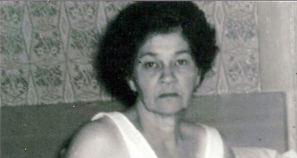

Nellie May Snider (née Parrish) 1903 - 1962
[ Home ] | [ Calendar ] | [ Surnames Index ] | [ Errors ] | [ Family History ]Nellie Parrish, the wife of Ralph Voris Bixler (the fourth cousin twice-removed on the mother's side of Nigel Horne), was born in Cataract, Owen, Indiana, USA on 3 Mar 19031 and was married twice - to Ralph Bixler (on 29 Sept 1919 in Owen, Indiana, USA) Alexander Snider1. She had 6 children with Ralph Bixler: Robert Edward, Ruth Marie, Ella Louise, Pauline, Katherine and Anna Mae. On 3 Apr 1930, she was living in Joe Zink Road, Clay, Indiana2.
She died on 4 Feb 1962 in Greenfield, Hancock, Indiana and was buried at Crown Hill Cemetery, Indianapolis, Marion, Indiana after 4 Feb 1962.
Children
- Robert Edward was born on 25 Nov 1920
- Ruth Marie was born on 29 Jan 1922
- Ella Louise was born on 10 Sept 1923
- Pauline was born on 26 Jun 1926
- Katherine was born on 15 May 1928
- Anna Mae was born on 14 Aug 1930
Citations
- United States Marriages - Findmypast
- US Census 1930 - Findmypast (was age 27 and the wife of the head of the household)
Media
Nellie Mae Parrish -2
Nellie Mae Parrish

Nellie Parrish
Pauline and Annie Bixler with Nellie Parish

United States Marriages - R_75585969/2
Indiana Marriages 1811-1959 Transcription - R_75585969
United States Marriages - FS/MAR/32970406/2
1940 US Census Transcription - USC-1940-1456124391
United States Marriages Transcription - FS-MAR-32970406-1
1930 US Census Transcription - USC-1930-004950638-00007-039
Family Tree

Map
Generated by ged2site. Last updated on Jul 3, 2024
Known Issues
Death date (4 Feb 1962) has no citations
Burial place (Indianapolis, Marion, Indiana, USA) has no citations
No records of living with anyone
Adding date of burial as 'aft 4 Feb 1962'